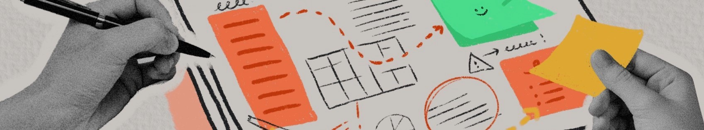
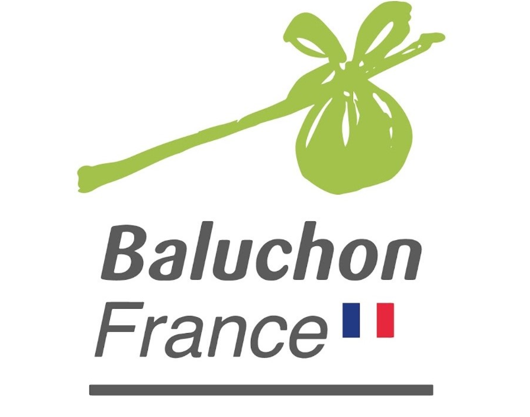

Le baluchonnage
En tant que freelance, j’ai travaillé avec l’association Baluchon France dans l’objectif de concevoir et réaliser une vidéo décrivant leur activitées. Le baluchonnage est un service d’aide à domicile longue qui vise à soulager les aidants de personnes âgées ou en situation de handicape pour qui d'autres formes d’aides ne seraient pas adaptées.
Je me suis associé à Clara Boussard qui s’est occupée du montage et des illustrations. De mon côté, en échange constant avec la direction de Baluchon France, j’ai pensé le script et la structure de la vidéo dans l’objectif de présenter ce sujet complexe au public.
